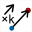

C'est un point qu'on peut librement déplacer sur la figure.
Le point libre à coordonnées entières : 
C'est un point qu'on peut librement déplacer sur la figure mais dont les coordonnées restent entières.
Il est possible de limiter les positions possibles horizontalement et verticalement.
C'est un point qui a été défini comme intersection de deux objets ou comme image d'un autre point par une transformation.
C'est un point qui reste attaché à un objet. Il peut être déplacé mais il doit rester sur l'objet.
Un point peut être lié à une droite, une demi-droite, un segment, un cercle, un polygone, une ligne brisée, un arc de cercle ou un lieu de points reliés.
On peut transformer un point lié en point libre avec le menu Modifier - Suppression d'une liaison - Entre un point et un objet.
On peut transformer un point libre en point lié avec le menu Modifier - Création d'une liaison - Entre un point et un objet.
Le point par somme de deux vecteurs : 
C'est un point qui est l'image d'un autre par une translation dont le vecteur est la somme de deux vecteurs.
Le point par produit d'un vecteur par un nombre : 
C'est un point qui est l'image d'un autre par une translation dont le vecteur est le produit d'un vecteur par un nombre.
C'est un point défini par des coordonnées dans un repère.
Le point intérieur à un polygone : 
C'est un point qui est créé en cliquant à l'intérieur d'un polygone.
On peut le capturer mais il restera à l'intérieur du polygone.
Si le polygone n'est pas convexe il peut arriver qu'en le déformant lepoint "saute" sur un des bords.
On peut transformer un point intérieur à un polygone en utilisant le menu Modifier - Suppression d'une liaison - Entre un point et un objet.
On peut transformer un point libre en un point intérieur à un objet en utilisant le menu Modifier - Création d'une liaison - Entre un point et l'intérieur d'un polygone.
On peut créer une droite par deux points, comme parallèle, perpendiculaire, bissectrice, médiatrice, droite horizontale, droite verticale, droite définie par un point et son coefficient directeur dans un repère ou par une équation de droite dans un repère.
On peut aussi créer l'image d'une droite par une transformation (excepté l'inversion).
Un segment est créé en désignant ses deux extrémités.
On peut aussi créer l'image d'un segment par une transformation (excepté l'inversion).
On crée un cercle soit en cliquant sur son centre et un point soit en cliquant sur son centre et en donnant son rayon.
On peut aussi créer l'image d'un segment par une transformation (excepté l'inversion).
On crée une demi-droite en cliquant sur l'origine et sur un autre point.
On peut aussi créer l'image d'une demi-droite par une transformation (excepté l'inversion).
On crée un vecteur en cliquant sur son origine puis son extrémité.
Il ne s'agit pas d'un vrai vecteur au sens mathématique mais d'un segment muni d'une flèche.
On peut donc lier un point à un vecteur.
Un arc de cercle est créé :
On crée un polygone en cliquant sur ses sommets puis en cliquant sur le bouton droit quand on a désigné le dernier sommet (on peut aussi cliquer à nouveau sur le premier sommet).
On peut aussi créer l'image d'un polygone par une transformation (excepté l'inversion).
On crée une ligne brisée en cliquant sur ses sommets puis en cliquant sur le bouton droit quand on a désigné le dernier sommet.
On peut aussi créer l'image d'une ligne brisée par une transformation (excepté l'inversion).
Il est possible de créer :


Une marque de segment doit être associée à un segment. On la crée en cliquant sur le segment.
La palette de style de marque permet de choisir la marque créée.
La marque de segment est créée dans le style de trait actif.
Un commentaire est un affichage de texte sur la figure.
Le commentaire peut être libre () ou lié à un point ().
Il peut contenir des références à des calculs ou variables et permettre ainsi l'affichage de valeurs dynamiques.
Il peut aussi contenir des caractères grecs ou spéciaux.
Il peut effacer ou non les objets qu'il recouvre et qui le précèdent.
Il peut être encadré ou non (avec ou sans effet de relief).
Plusieurs tailles de caractères sont disponibles.
On peut choisir le type d'alignement horizontal ( à gauche,
à gauche,  centré ou
centré ou  à droite) et vertical (
à droite) et vertical ( en haut,
en haut,  centré ou
centré ou en bas).
en bas).
Pour que les caractères suivants soient écrits en italique, entrer les caractèrss #I.
Pour que les caractères suivants soient écrits en gras, entrer les caractères #G.
Pour revenir à un affichage de police normal, entrer les caractères #N.
On peut insérer du code LaTeX dans un commentaire en encadrant ce code entre deux caractères $.
Des boutons en haut de la boîte de dialogue permettent d'insérer les codes LaTeX les plus courants.
Pour aider l'insertion de code LaTeX l'appui sur la touche TAB met le point d'insertion du curseur juste après l'accolade ouvrante suivante.
Il permet d'afficher une valeur sur la figure.
L'affichage de valeur peut être libre ( ) ou lié à un point (
) ou lié à un point ( ).
).
On peut spécifier :
le nombre de décimales.
une en-tête (qui sera affichée avant la valeur).
une post-chaine (qui sera affichée après la valeur).
Il peut effacer ou non les objets qu'il recouvre et qui le précèdent.
Il peut être encadré ou non (avec ou sans effet de relief).
On peut choisir le type d'alignement horizontal ( à gauche, centré ou à droite) et vertical ( en haut, centré ou en bas).
On peut lier à un point un affichage de valeur libre avec le menu Modifier - Création d'une liaison - Entre un affichage et un point).
On peut rendre libre un affichage de valeur lié à un point avec le menu Modifier - Suppression d'une liaison - Enetre un affichage et un point).
Il permet d'incorporer du texte mathématique utilisant la syntaxe LaTeX.
Il est possible d'y insérer de façon dynamique le résultat d'un calcul réel ou complexe ou d'une variable.
L'affichage LaTeX peut être libre ( ) ou lié à un point ().
) ou lié à un point ().
Il peut contenir des références à des calculs ou variables et permettre ainsi l'affichage de valeurs dynamiques.
Il peut effacer ou non les objets qu'il recouvre et qui le précèdent.
Il peut être encadré ou non (avec ou sans effet de relief).
Plusieurs tailles de caractères sont disponibles.
On peut choisir le type d'alignement horizontal ( à gauche, centré ou à droite) et vertical ( en haut, centré ou en bas).
Des boutons permettent d'insérer les codes LaTeX les plus usuels.
Pour aider l'insertion de code LaTeX l'appui sur la touche TAB met le point d'insertion du curseur juste après l'accolade ouvrante suivante.
Il permet d'incorporer un champ d'édition pour la formule d'un calcul ou d'une fonction (réel ou complexe).
Lors de la création d'un éditeur de formule, on choisit d'abord son emplacement sur la figure, puis une boîte de dialogue s'ouvre permettant de choisir dans une liste le calcul ou la fonction auquel il est associé et sa taille. On peut choisir une en-tête qui sera affichée devant le champ d'édition. Si cette en-tête est vide, le nom du calcul sera affiché devant suivi du signe d'égalité (par exemple pour une fonction f de deux variables sera affiché f(x,y) = ).
Si vous laissez cochée la case à cocher Visualisation de la formule en LaTeX, la formule entrée dans le champ d'édition sera reconstituée sous forme naturelle en LaTeX à droite du champ d'édition.
Si la case Visualisation de la formule en LaTeX vous pouvez spécifier un code dans le champ Pré-code LaTeX qui sera inséré devant le code LaTeX correspondant à la formule entrée dans l'éditeur. Dans ce cas aussi, si la formule Affichage temps réel de la formule est cochée, la formule sera affichée au fur et à mesure que l'utilisateur entrera sa formule dans l'éditeur. Sinon elle ne sera affichée que lorsque l'utilisateur aura validé en appuyant sur la touche Entrée.
L'affichage LaTeX Le lieu de points reliés :
Il est obtenu en joignant les positions possibles d'un point par des segments.
Ces positions peuvent être générées :
soit par les positions d'un point lié à un objet ( ).
).
soit par les valeurs d'une variable (menu Créer - Lieu de points reliés - Généré par variable).
On peut spécifier le nombre de points pour obtenir le lieu et indiquer si le lieu est fermé ou non).
Le lieu de points non reliés :
Il est obtenu en traçant les positions possibles d'un point.
Ces positions peuvent être générées :
soit par les positions d'un point lié à un objet (Créer - Lieu de points non seliés - Généré par point lié).
soit par les valeurs d'une variable (menu Créer - Lieu de points non seliés - Généré par variable).
On peut spécifier le nombre de points pour obtenir le lieu et indiquer si le lieu est fermé ou non).
Une surface s'obtient en remplissant une partie de la figure.
: Création d'une surface délimitée par un polygone, un cercle, un arc de cercle ou un lieu de points reliés fermé.
 : Création d'une sufsurfacerace délimitée par deux lieux de points.
: Création d'une sufsurfacerace délimitée par deux lieux de points.
 : Création d'une surface délimitée par un lieu de points et deux points.
: Création d'une surface délimitée par un lieu de points et deux points.
 : Création d'une surface délimitée par un lieu de points et une droite.
: Création d'une surface délimitée par un lieu de points et une droite.
La surface est créée dans le style de remplissage actif et la couleur active.
Un demi-plan est tracé dans le style de remplissage actif et la couleur active.
On le crée en cliquant sur une droite (le bord) et sur un point intérieur au demi-plan.
Le graphe de suite récurrente réelle :
Il est créé dans le style de trait actif et la couleur active.
Il s'agit du graphe "en toile d'araignée" d'une suite récurrente réelle définie par son premier terme et une relation de la forme u(n+1)=f[u(n)] où f est une fonction numérique réelle.
On peut ou non relier les points à l'axe des abscisses.
Le graphe de suite récurrente complexe :
Il est créé dans le style de trait actif et la couleur active.
C'est le graphe d'une suite récurrente complexe définie par son premier terme et une relation de la forme u(n+1)=f[u(n)] où f est une fonction numérique complexe.
Chaque terme de la suite en marqué par un point (tracé dans le style de point actif) et est relié au suivant par un segment (tracé dans la couleur et le style de trait actifs).
Il sert à afficher dans la figure une image contenue dans un fichier.
Cet affichage peut effacer ou non les objets qu'il recouvre et qui le précèdent.
Il peut être encadré ou non (avec ou sans effet de relief).
On peut choisir le type d'alignement horizontal ( à gauche, centré ou à droite) et vertical ( en haut, centré ou en bas).
Le lieu d'objet est un ensemble de traces laissées par un objet.
Il peut être généré par un point lié à un objet ou par une variable.
Le nombre N de traces formant le lieu est limité à 2000. Ce nombre peut être dynamique.
Dans le cas où le lieu d'objet est généré par un point lié à un objet, les traces formant le lieu d'objet sont calculées de la façon suivante : On simule N positions successives du point lié sur l'objet auquel il est lié. Pour chacune de ces positions on laisse une trace pour l'objet choisi (un segment par exemple).
Le principe est le même dans le cas où le lieu d'objet est généré par une variable, on procède de la même façon en simulant N valeurs successives de la variable comprises entre sa valeur minimale et sa valeur maximale.
Pour désigner un lieu d'objet il suffit de cliquer au voisinage d'une des traces qui le composent.
A noter :
Pour changer la couleur d'un lieu d'objet, il faut utiliser l'outil palette ( ).
).
Un lieu d'objet généré par un objet de type ligne n'a pas de style de tracé qui lui soit propre.
Pour changer le style de trait d'un lieu d'objet, il faut changer le style de trait de l'objet dont les traces génèrent le lieu d'objet.
Il est possible de créer des lieux de lieux d'objets mais il ne seront tracés que si le nombre total d'objets ne dépasse pas 5000.
Dans certains cas, un objet peut être partiellement caché par des objets qui ont été définis après-lui.
On pout alors créer un dupliqué de cet objet dont la seule fonction sera de retracer cet objet.
On ne peut créer qu'un seul dupiqué pour un objet donné.
Affichage d'une équation de droite :
Il ne s'agit pas vraiment d'un objet mais d'un affichage LaTex qui est un objet final de construction affichant l'équation réduite d'une droite dans un repère.
Pour cela, utiliser le menu Créer - Affichage - Equation de droite - libre ou Créer - Affichage - Equation de droite - lié à un point.
Dans le premier cas, cliquer à l'endroit où l'équation de droite sera affichée. Dans le second, cliquez sur un point auquel l'affichage de l'équation de droite sera lié.
Une boîte de dialogue s'ouvre. Choisissez le repère (si votre figure en comporte plusieurs), le nombre de décimales pour les coefficients, le type d'affichage et l'eventuelle couleur de fond de fond puis validez.
L'equation affichée sera de la forme y = ax + b si elle n'est pas parallèle à l'axe des ordonnées et de la forme x = Constante sinon.
C'est un objet qui joue exactement le même rôle qu'un objet du même typé précédemment défini.
Ce type d'objet est particulièrement utile pour les constructions itératives et récursives apparues avec la version 4.8 de MathGraph32.
Il est possible de créer un clone des objets suivants : point, droite, demi-droite, segment et cercle.
Created with the Personal Edition of HelpNDoc: Easy CHM and documentation editor